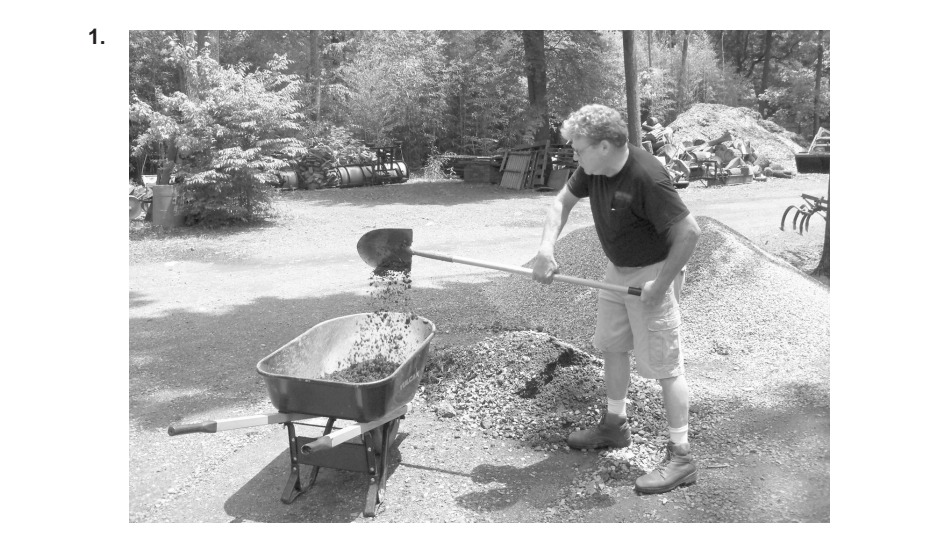
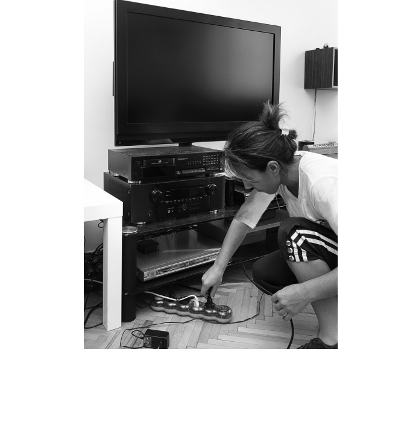
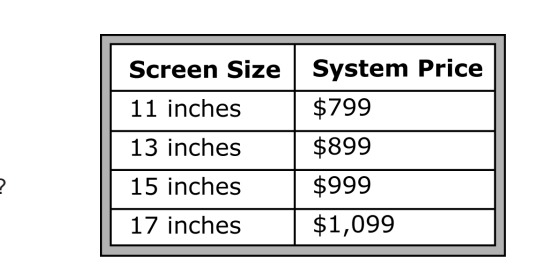
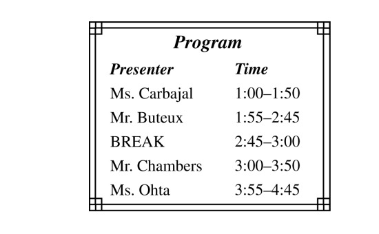

📋 機能概要
toeicPass は TOEIC スコアアップに必要な学習サイクル「聞く → 真似る → 覚える → 解く → 見直す」をワンストップで提供する Web アプリです。Next.js 15 + NestJS のモノレポで構築し、Hugging Face Spaces にデプロイしています。
シャドーイング
TED・YouTube・ドラマ・ニュースの英語素材を文単位で跟读。Web Speech API で発話認識も搭載。
単語学習
SM-2 間隔反復アルゴリズムのフラッシュカード。デイリー目標・ CEFR レベル・スコア帯別管理。
文法練習
TOEIC Part 5〜7 頻出文法ルールを英・中・日の 3 言語で解説するカード学習。
パート別練習
Part 1〜7 のアダプティブ問題演習。写真描写・リスニング・読解、すべてに対応。
模擬試験
200 問・120 分のフル模試。TOEIC スコア換算・パート別結果分析付き。
間違いノート
誤答を自動収集 → 根因タグ（語彙/文法/論理/不注意）→ 類似問題ドリル。
AI 音声会話
8 つの TOEIC シナリオで英語音声チャット。Gemini 2.0 Flash + ルールベースフォールバック。
ライティング評価
自由テキスト入力 → AI が語彙・文法・構成をスコア評価 → 改善提案。
🎧 シャドーイング（跟读練習）
シャドーイングとは、英語の音声を聞きながら少し遅れて同じ内容を声に出す練習法です。toeicPass では、さまざまなジャンルの英語素材を文単位で区切り、「聞く → 繰り返す」サイクルをアプリ上で完結させています。
素材ライブラリー
| ソース | 内容 | 難易度 |
|---|---|---|
| 🎤 Steve Jobs | スタンフォード大学卒業スピーチ (2005) | ★★☆ |
| 🎙️ TED Talks | 最新 TED トークの自動同期 | ★★☆ |
| 📺 YouTube | 日本語話者向け英語トレーニング動画 | ★☆☆ |
| 🎬 ドラマ / ニュース | ネイティブ速度の実用的素材 | ★★★ |
主要機能
📍 文単位再生
各文に開始/終了秒が設定され、特定区間だけをループ再生可能。
🔤 単語アノテーション
テキスト内の単語をクリック → IPA（国際音声記号）+ 日本語・中国語の意味がポップアップ。
🎙️ 音声認識
Web Speech API でブラウザネイティブの音声認識。外部ライブラリ不要。
🔊 TTS 読み上げ
SpeechSynthesis API でテキスト選択 → 発音を自動再生。
技術実装
// 素材データ構造（各文にタイムスタンプ付き）
{
"id": "steve-jobs-stanford",
"title": "Steve Jobs' Stanford Commencement Address",
"difficulty": 2,
"segments": [
{
"text": "I am honored to be with you today...",
"translation": "今日皆さんとご一緒できて光栄です...",
"startSec": 0,
"endSec": 5.2
}
]
}// Web Speech API による音声認識
const recognition = new (window.SpeechRecognition
|| window.webkitSpeechRecognition)();
recognition.lang = "en-US";
recognition.interimResults = true;
recognition.onresult = (event) => {
const transcript = event.results[0][0].transcript;
// ユーザーの発話テキストを取得 → 原文と比較
};📖 単語学習（ボキャブラリー）
TOEIC 頻出単語を SM-2 間隔反復アルゴリズム でフラッシュカード学習します。毎日の復習対象が自動計算され、「忘れた → 間隔短縮、覚えた → 間隔延長」で効率的な記憶定着を実現します。
カードメタデータ
各カードには以下の情報が付与されています：
| フィールド | 説明 | 例 |
|---|---|---|
term | 英単語 | accommodate |
pos | 品詞 | verb |
definition | 英語定義 | to provide lodging or room for |
definitionJa | 日本語定義 | 〜を収容する、〜に対応する |
definitionCn | 中国語定義 | 容纳；适应 |
example | 例文 | The hotel can accommodate 500 guests. |
cefrLevel | CEFR レベル | B2 |
scoreBand | 目標スコア帯 | 730 |
sourcePart | TOEIC パート | 5 |
SM-2 アルゴリズム
// SM-2 評価ロジック
Grade 1 (忘れた) → intervalDays = 1, easeFactor -= 0.2
Grade 2 (うろ覚え) → intervalDays = 1, easeFactor -= 0.1
Grade 3 (覚えた) → intervalDays × easeFactor, easeFactor += 0.1
// easeFactor は 1.3 以下にはならない（下限ガード）3 つのタブ UI
📚 Study
今日の復習対象カードをまとめて表示。デイリー目標つき。カードめくり → 3段階評価。
🔍 Browse
全カードのリスト。パート別・スコア帯別・状態別フィルター。テキスト検索・ソート対応。
📊 Stats
マスター率・パート別分布・スコア帯別分布・EF ファクター分布グラフ。
📝 文法練習
TOEIC Part 5〜7 で頻出する文法ルールをカード形式で学習します。各ルールには英語・中国語・日本語の 3 言語で解説 が付いています。
主なカテゴリ
| カテゴリ | 内容 | TOEIC パート |
|---|---|---|
| 主語-動詞一致 | 三人称単数の -s、集合名詞 | Part 5 |
| 時制の一致 | 現在完了 vs 過去形、未来表現 | Part 5, 6 |
| 関係代名詞 | who / which / that の使い分け | Part 5, 6 |
| 修飾語の配置 | 形容詞の語順、分詞構文 | Part 5 |
| 動詞の形 | 動名詞 vs 不定詞、使役動詞 | Part 5, 6 |
| 前置詞・コロケーション | in charge of, due to, 等 | Part 5, 6, 7 |
FlashCard.tsx コンポーネントを再利用。同じ SM-2 アルゴリズムで復習間隔を管理し、文法ルールの定着を促します。
🎯 パート別練習 & 模擬試験
全 7 パートに対応
TOEIC の各パートに最適化された問題演習 UI を提供しています。問題データは 15 以上の JSON ファイルに数千問格納されています。
| パート | 形式 | UI 特徴 |
|---|---|---|
| Part 1 | 写真描写 | 画像表示 + 4 択音声選択 |
| Part 2 | 応答問題 | 音声 + 3 択 |
| Part 3 | 会話問題 | 音声 + 会話パッセージ + 複数設問 |
| Part 4 | 説明文問題 | 音声 + 説明パッセージ + 複数設問 |
| Part 5 | 短文穴埋め | 英文 + 4 択 |
| Part 6 | 長文穴埋め | パッセージ + 複数穴埋め |
| Part 7 | 読解問題 | 長文 + 複数設問 |
TOEIC Part 1 問題の写真素材




リスニング写真素材


模擬試験（フル模試）
⏱️ 120 分タイマー
本番同様の時間制限。時間切れで自動終了。フルスクリーンモード対応。
📊 スコア換算
450〜990 点の TOEIC 公式スコアレンジで換算。パート別正答率も表示。
🔄 即時復習
試験終了後、間違えた問題を即座に復習。解説付き。
❌ 間違いノート
練習・模試で間違えた問題を自動収集し、体系的に管理します。
🏷️ 根因タグ
語彙不足 / 文法ミス / 論理理解不足 / 不注意 の 4 分類で根本原因をタグ付け。
📝 メモ機能
各ミスに回避策メモを自由記入。「次回は○○に注意」の自分用コメント。
🎯 類似問題ドリル
「この問題に似た問題を練習」ボタンで、弱点に集中した反復学習。
🤖 AI 活用機能
AI 音声会話
8 つの TOEIC 頻出シナリオ（オフィス雑談、レストラン注文、空港チェックイン、ホテル予約、ショッピング、ビジネス会議、電話応対、面接）で英語音声チャットを行います。
| シナリオ | カテゴリ | 難易度 |
|---|---|---|
| Office Small Talk | オフィス | ★☆☆ |
| Restaurant Order | レストラン | ★☆☆ |
| Airport Check-in | 空港 | ★★☆ |
| Hotel Reservation | ホテル | ★★☆ |
| Business Meeting | 会議 | ★★★ |
| Job Interview | 面接 | ★★★ |
npm install → npm run dev だけで全機能を確認できます。
AI ライティング評価
自由テキストを入力すると、AI が語彙・文法・構成を分析し、スコアと具体的な改善提案を返却します。TOEIC のメール作成やレポート作成の練習に最適です。
⚙️ 技術スタック
| レイヤー | 技術 | 用途 |
|---|---|---|
| Frontend | Next.js 15, React, TypeScript | SSR + クライアントレンダリング |
| Backend | NestJS, TypeScript | REST API, JWT 認証, RBAC |
| Database | PostgreSQL / PGLite | テスト時はインメモリ DB |
| AI | Google Gemini 2.0 Flash | 会話・ライティング評価 |
| 音声 | Web Speech API | STT (音声認識) + TTS (音声合成) |
| 認証 | JWT + OAuth2 | Google / WeChat / LINE ログイン |
| CI/CD | GitHub Actions | Hugging Face Spaces 自動デプロイ |
| テスト | Jest (API) + Vitest (Web) | E2E + ユニットテスト |
🌏 多言語対応
toeicPass は中国語（簡体字）と日本語に完全対応しています。UI ラベルだけでなく、単語の定義、文法の解説、シャドーイング素材の翻訳もすべて多言語で提供。
// i18n 設定例
const I18N = {
"zh": {
title: "AI 语音对话",
hold: "按住说话",
corrections: "纠正",
suggestions: "建议",
},
"ja": {
title: "AI 音声会話",
hold: "押して話す",
corrections: "修正",
suggestions: "アドバイス",
},
};🚀 使い方
Hugging Face で即座に試す
ローカル開発
# リポジトリをクローン
git clone https://github.com/peanutao/toeicPass.git
cd toeicPass
# 依存関係インストール
npm install
# 開発サーバー起動（API: 8001, Web: 8000）
npm run dev
# テスト実行
npm test # API E2E テスト (26 テスト)
npm -w apps/web exec vitest # Web ユニットテスト (192 テスト)GEMINI_API_KEY 環境変数を設定しなくても、AI 会話はルールベースフォールバックで動作します。本格利用には Google AI Studio で API キーを取得してください。